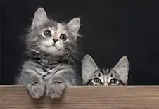

La relación de los gatos con los seres humanos comenzó entre hace 10 mil y 12 mil años. El lugar que vio nacer uno de nuestros vínculos más fuertes con otra especie fue el Creciente Fértil, una región histórica del Oriente Próximo. Sin embargo, todavía hace 70 años la mayoría de estos felinos no tenían un hogar para compartir con una persona. De modo que por miles de años, los ahora gatos domésticos estuvieron en una realidad distante a la nuestra.
Y bien, el dejar el nomadismo, y dar lugar a la agricultura, fue un paso fundamental para empezar a estrechar lazos con nuestros felinos favoritos. Esta cercanía facilitó la domesticación de la especie. El animal avanzó también culturalmente, ya que algunas civilizaciones se inspiraron en él para dar forma a seres divinos.
¿Cuándo empezó la domesticación del gato?
Podríamos pensar que la respuesta a esta pregunta nos llegaría fácilmente por parte de los estudios arqueológicos, pero el asunto es un poco más complicado de lo que parece. Por ejemplo, los gatos salvajes y los domésticos tienen esqueletos muy similares, lo que complica el tema.
Te puede interesar: La deslumbrante variedad de ojos de los gatos se explica con un antepasado poco común
En Chipre están algunos de los mejores antecedentes. De hecho, en 2004 se encontró el entierro de un ser humano junto a un gato. Esto fue datado con más de 9 mil años.
